TradeMe is the redesigning project for my University assignment. TradeMe is a very popular platform in New Zealand, which provides various services such as Jobs, Motors, Insurance, and Property. Following were the two main challenges faced by me:
- Overwhelming vastness of various content
- Crowded Design
Process
I focused on the searching and buying of the product along with the design. To locate the problem in these areas the following process was considered:
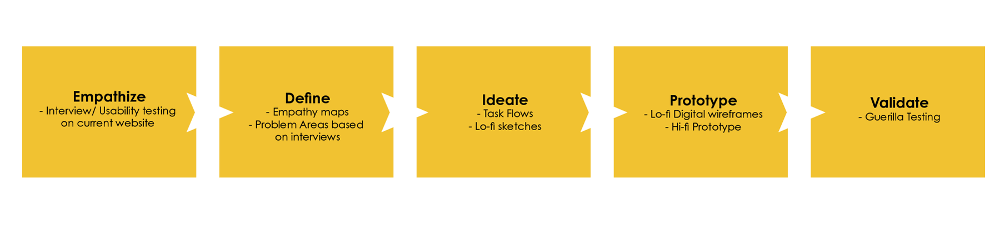Interviews
To locate the problem in the chosen parameter usability test was conducted. The age range between 20 - 50 years were recruited for the Usability test. The interviewees were given two tasks to perform and at each step were asked to think out loud while performing.
- Task 1: Search any item in the marketplace section on the homepage.
- Task 2: Select any item from the given search result and perform the buying process.
“ It’s a very vast Website ”
“ Proactive in contacting the seller ”
“ The has a lot of content and the new design by Trademe is worse ”
Problem Area
Gathering all the pain points from the recordings, I got to know there were four main areas to focus on throughout the process.
Problem Area One : Users focus only on the search bar and ignores the rest of the function in the highlighted area.
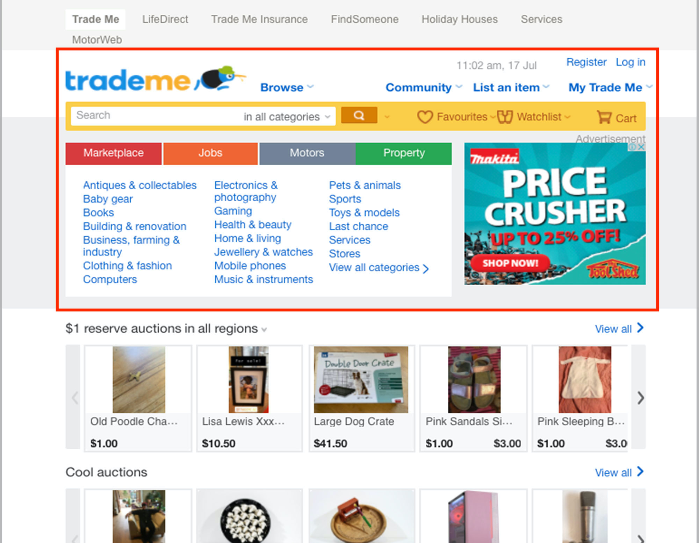5/5 interviewees directly searched for the item using the search bar in the usability test.
Problem Area Two : Trade me doesn't have a single focus area, equal weightage is given to all the sections.
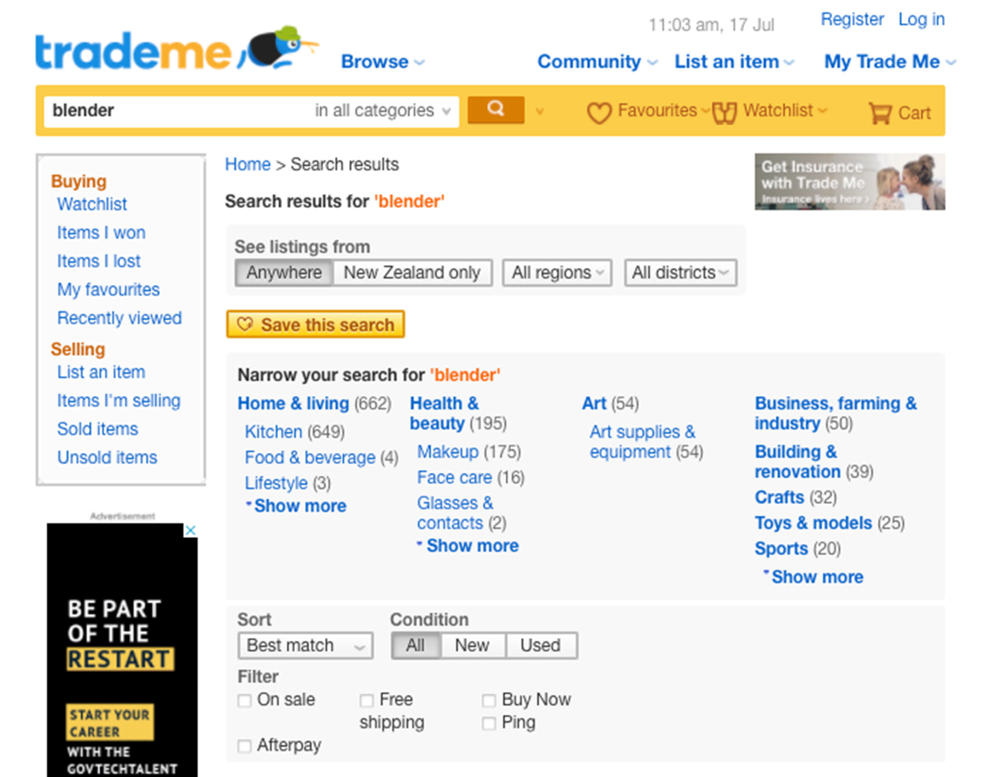3/5 interviewees were overwhelmed with all the options provided and got confused on where to focus.
Problem Area Three : The users found difficult to locate the Question & Answer section.
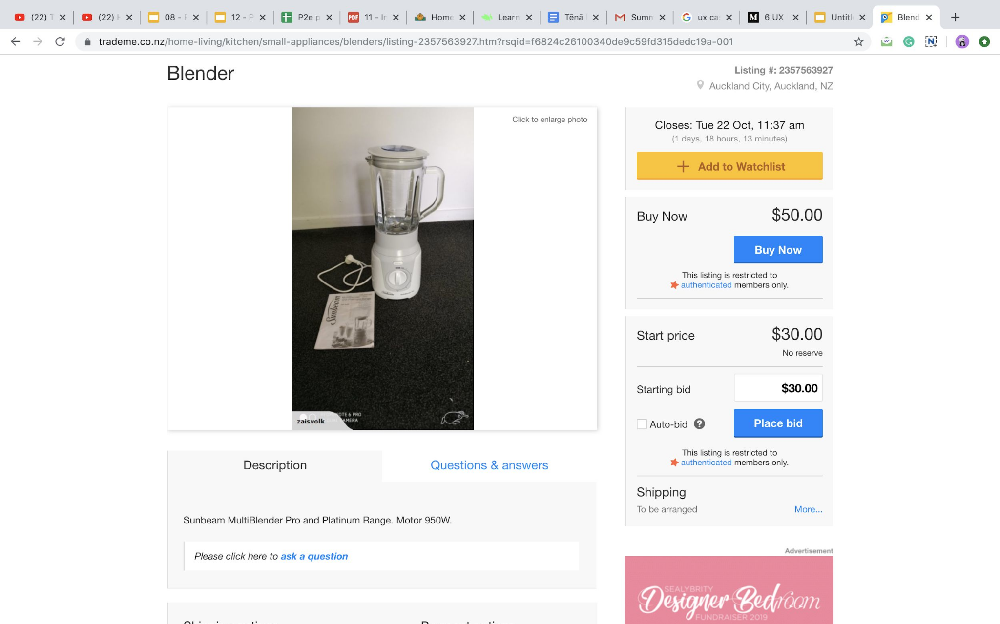4/5 interviewees wanted to get in contact with the seller and took a bit of time to locate the question & answers section.
Problem Area Four : Sellers information and details regarding their service are getting lost in the vastness on the website.
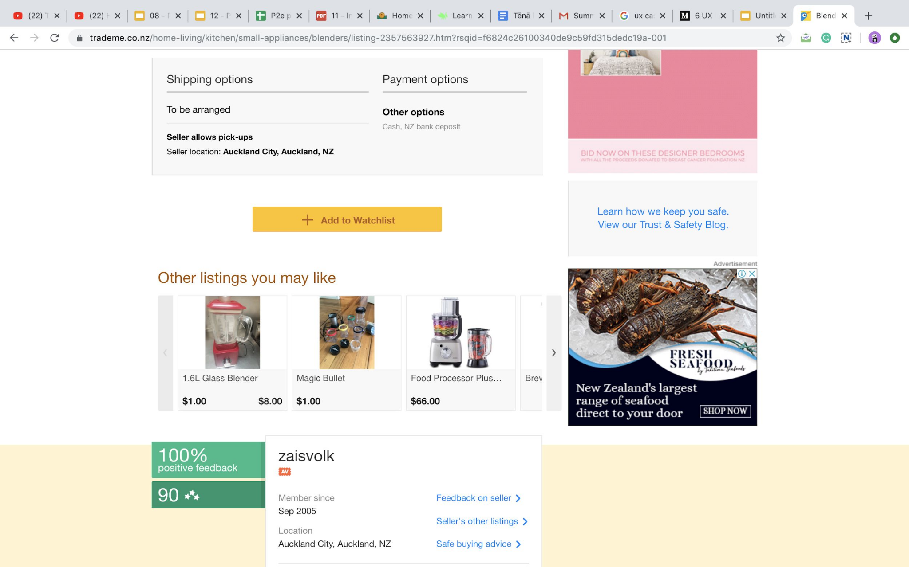5/5 interviewees were not able to look for the sellers detail as a given task. They would scroll till the end of the page and still not find this section.
Empathy Maps
After the interviews and locating the problem areas, I mapped the thoughts and responses of the users to understand their connection with the website and to know about interviewees experience as well.
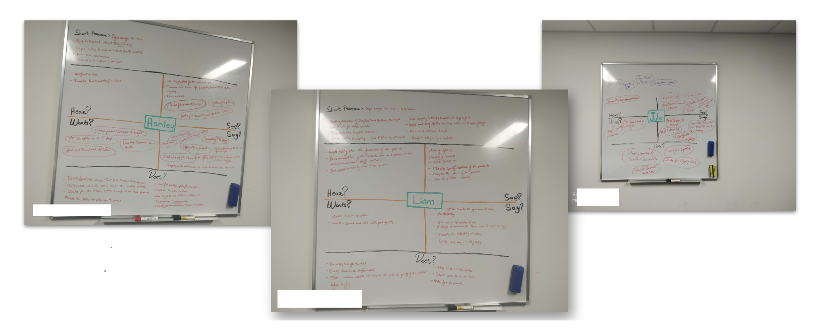User Flow
With all the observation in the interviews/ usability test on the bases of majority of the interviewees, I design a user flow which will be helpful to understand and solve the problem in a better way.
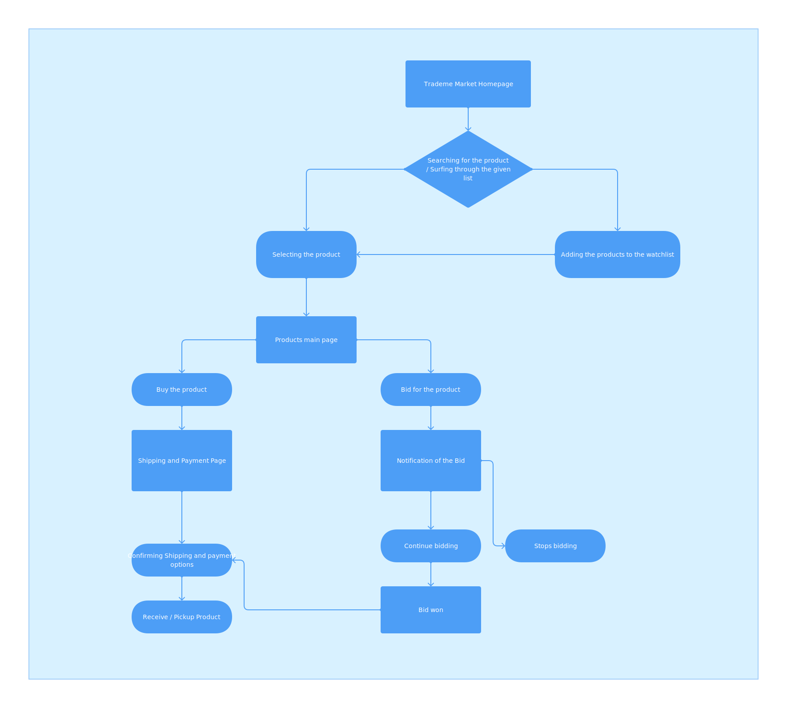Journey Mapping
Getting all the insights and understanding of the of the Trade Me users, I created a journey map which helped he to visualise the whole process the users go through whiles purchasing a product or biding for it.
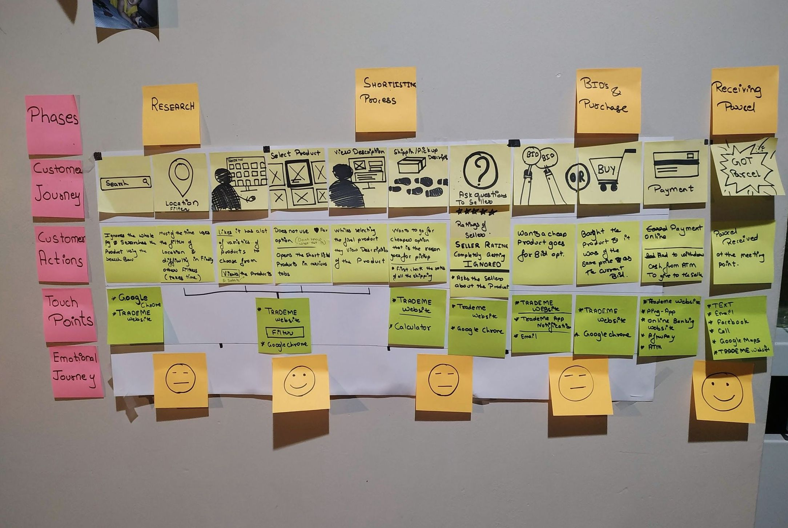When no boards are available to use in uni, you get your research home
Low Fidelity Sketches
For each pian points I started sketching the solutions for website in-order to redesign and make it more user friendly. Sketching helped a lot to get clear ideas and sort the vast information on the website and showcase it in a better way.

Prototype - Wireframes
Transferred the sketches in to the digital wireframes in order to test them before diving into the High fidelity prototype.
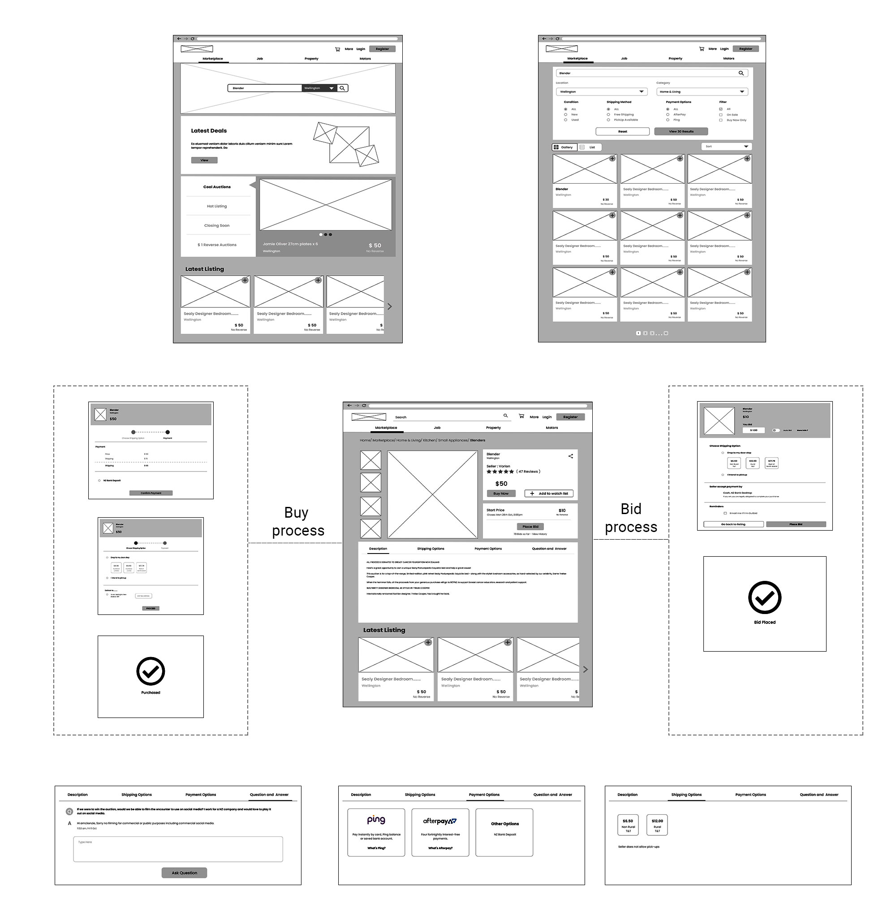Prototype - Wireframe Flow
A complete flow from users searching for the product till the purchanse of the product. The purchanse can be done either by bidding or directly opting the buying option , as shown in the below flow.
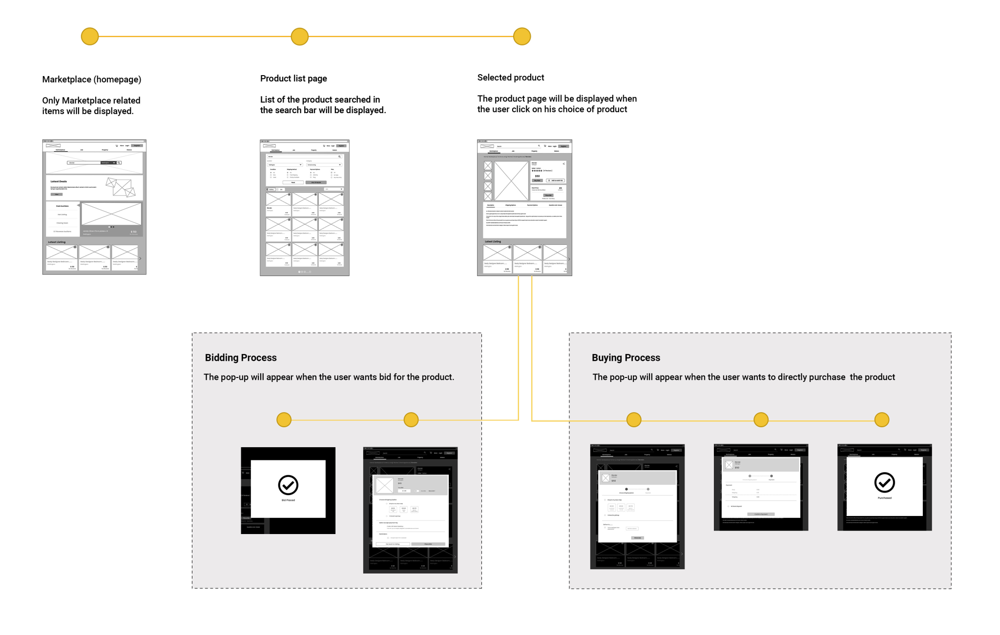Guerilla Testing
To know whether my design solution is meeting the needs of the New Zealanders for the website I did some on-street testing. I had a company of my classmate, we both did testing for our products. We exchanged roles of the interviewer and notetaker. At the time of her testing I notetaker while she was interviewing, and later when I was interviewing people she was take down all the notes.

High Fidelity Prototype
After the on-street testing it was time to put together all the insights that I was fetching. There were major redesigning changes that I did to the TradeMe website.
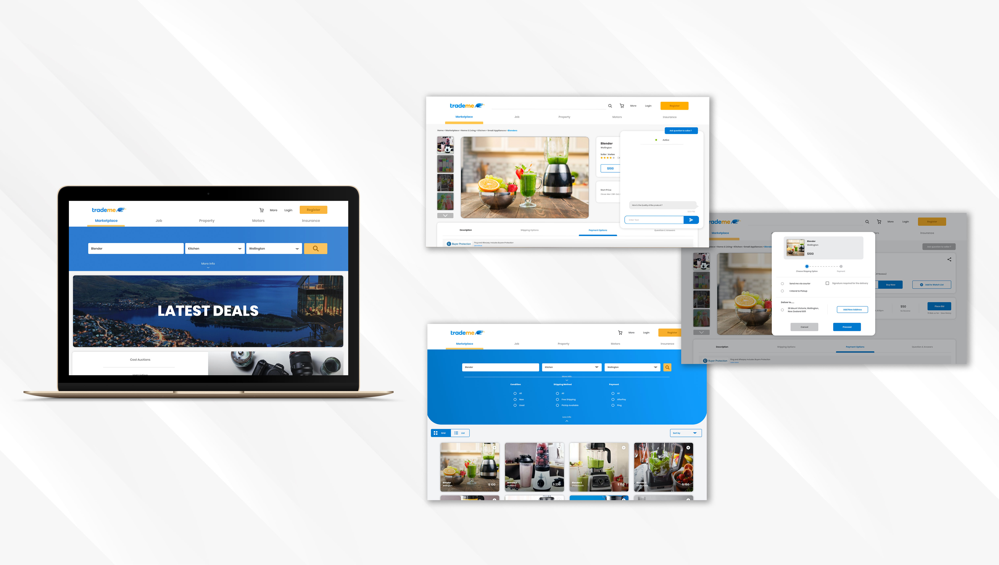Protype Link - https://xd.adobe.com/view/7dd63dbd-8a71-42bf-8a24-db5ef493c113-2885/?fullscreen
Learning
Trademe is a great platform for any product you want to buy or sell. The biggest challenge it faces is its vastness,